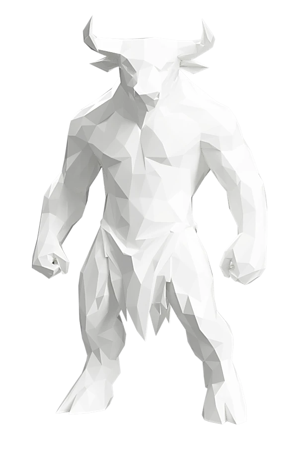
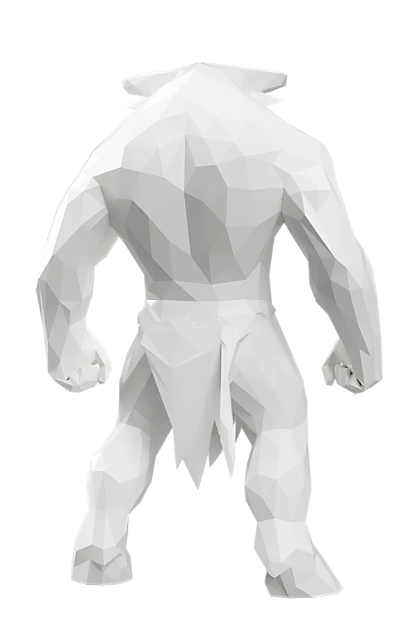
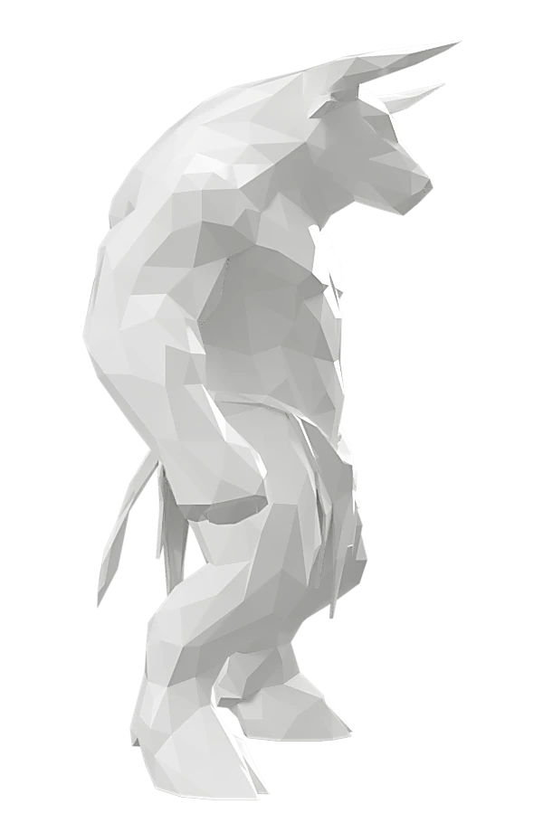

01 — Design
Dal modello digitale al low poly
Il modello di partenza, sviluppato anche con il supporto di strumenti di intelligenza artificiale, è stato rielaborato in modellazione 3D secondo un linguaggio low poly: superfici sfaccettate e geometrie nette che reinterpretano la figura mitologica con un'estetica contemporanea.



